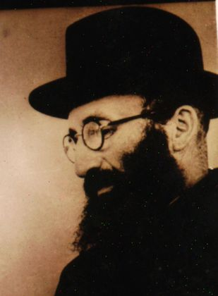
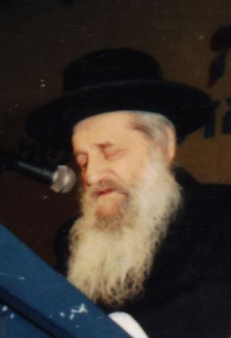
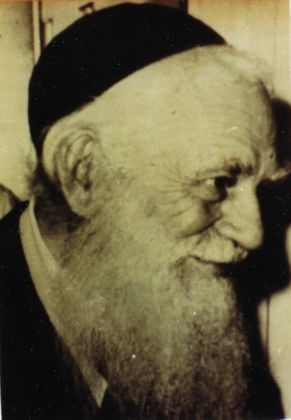
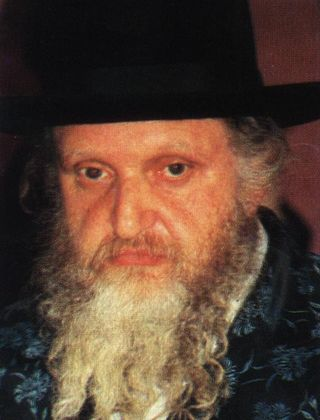
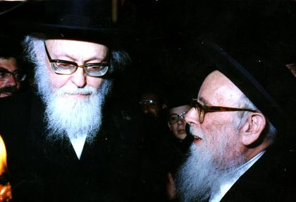
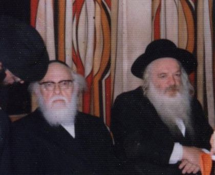
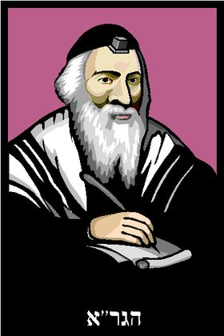

קיבלתי את 27 השמות שסימנתם. אצל 12 מהם יש כמה תמונות שונות — נא לבחור איזו להדפיס.
תווית «איור» בחום = רישום קליפ-ארט בשחור-לבן, לא תצלום.

הרב דסלר
הרב ווזנר
הרב כהנמן (פוניבז')
הרב משה שטרנבוך
הגרש"ז אוירבאך + הרב אלישיב
הרב אלישיב + הרב קנייבסקי
הגר"א